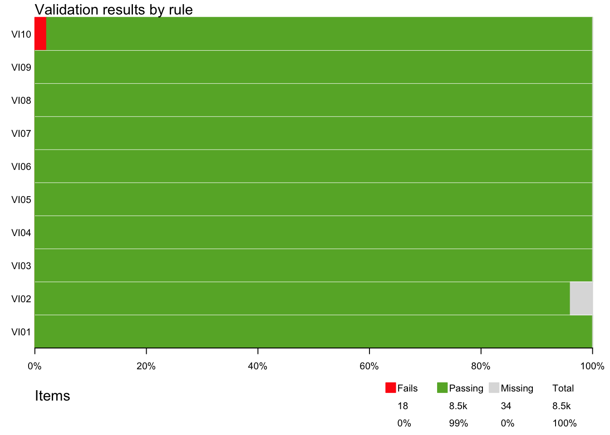

### Instalação e Carregamento do Pacote
# Lista de pacotes necessários
pacotes <- c('validate', 'tidyverse', 'gt','readxl')
# Verifica se os pacotes estão instalados e instala se necessário
install.packages(setdiff(x = pacotes,
y = rownames(installed.packages())))
# Carrega os pacotes
lapply(X = pacotes,
FUN = library,
character.only = TRUE)4 Workshop: Crítica e Imputação de Dados no R: Validate
Tutorial Transformação Digital nº 3
Resumo
Neste tutorial, exploramos o poderoso pacote validate do R, que é uma ferramenta essencial para validar dados e garantir a qualidade dos resultados em projetos. O pacote validate oferece uma variedade de funções que nos permitem verificar a validade dos dados criando regras de crítica.
Contato: transformacao.digital@fjp.mg.gov.br
5 Escrevendo e aplicando regras de críticas usando validate
O pacote validate do R é uma ferramenta poderosa que pode ser usada para validar dados e garantir a qualidade dos resultados de um projeto. Ele oferece uma variedade de funções que podem ser usadas para verificar a validade de dados, incluindo:
Validação de tipos de dados: O pacote validate pode ser usado para verificar se os dados estão no formato correto. Por exemplo, você pode usar a função
is.numeric()para verificar se uma variável é um número.Validação de valores: O pacote validate pode ser usado para verificar se os valores estão dentro de um intervalo aceitável. Por exemplo, você pode usar a função
between()para verificar se um valor está entre dois valores especificados.Validação de regras: O pacote validate pode ser usado para verificar se os dados atendem a regras específicas. Por exemplo, você pode usar a função
validate()para verificar se um valor é maior que outro valor.
Confrontar os dados com as regras e armazenar os resultados

Regras de crítica são expressões que são avaliadas ao ser confrontadas com dados, e resultam em um objeto do tipo ‘logical’ (TRUE ou FALSE)
Verificações de tipo da variável: is.numeric, is.character,. . .
Comparações: <, <=, ==, identical, !=, %in%, >=, >
Operadores lógicos: |, &, if, !, all, any
6 Padronização nas regras de crítica
A padronização dos nomes permite que seja possível a identificação da classificação da regra e a presença do atributo de flexibilidade. Define-se a seguinte proposta de nomenclatura para as regras de crítica, conforme Silva (2020):
1 carácter indicando finalidade + 1 carácter indicando flexibilidade + Sequência numérica
Classificação por finalidade
Tipo (T): refere-se a classe da variável, são realizadas verificações no sentido de identificar se os dados são numéricos, caracteres, lógicos, entre outros.
Validade ou Intervalo (V): refere-se aos intervalos estabelecidos matematicamente para um dado ou indicador. Verificações de valores positivos, intervalos entre 0 e 1, são exemplos de verificação de validades.
Fluxo (F): quando se estabelece que uma variável só existirá dado que outra existe, pode-se estabelecer uma regra de fluxo. Pode ser usada para os casos de questionários com as verificações dos “pulos”.
Consistência (C): refere-se aos casos em que se verificam as relações matemáticas com outras variáveis, por exemplo, parcelas de um total não podem ser maiores do que o próprio total.
Distribuição (D): regras de distribuição estabelecem parâmetros esperados para as estatísticas descritivas da variável como média, moda, mediana, máximo, mínimo e as medidas de dispersão.
Classificação por flexibilidade
Flexível (F): construída com parâmetros esperados, mas caso algum caso falhe a regra, precisa ser investigado o motivo, entendendo se a regra deveria ser outra ou se é o caso de se tratar de um valor atípico que futuramente merecerá uma imputação, ou ainda, simplesmente é um valor atípico explicado por alguma situação.
Inflexível (I): necessariamente precisa ser seguida, uma regra inflexível é rígida e não existe exceção a sua condição estipulada.
Exemplos
TI01: regra de tipo e inflexível
VI08: regra de validade e inflexível
CF02: regra de consistência e flexível
Por definição, regras da classe tipo, validade e fluxo são inflexíveis. As regras da classe consistência podem ser flexíveis e inflexíveis e, por fim, a regra do tipo distribuição é sempre flexível.
7 Leitura dos dados
Disponível em: base_dados
# Carregando dados
dados <- read_excel("dados/dados_validate.xlsx")
dados %>%
head(5) %>%
gt()| IBGE7 | S_TXBRUTAMORT | S_TXBRUTAMORT_t_1 | S_TXBRUTAMORTPAD | S_TXMOISQCOR45A59 | S_TXMOAVC45A59 | S_TXMOATRA15A29 | S_TXMOHOMI | S_TXMOHOMI15A29 | S_TXMOCANCOLUT | S_TXMOCANMA | S_TXMOCANPUL | S_OBITO60 | S_NASCBAIXOPESO | S_OBINFSIFILS | S_OBTETANONEO | S_OBRAIVA | S_INTERDVHID | S_INTERDRSAI | S_COBPSF | S_NASC7CONSUL | D_POPP0 | D_POPT | U_CONSSAU |
|---|---|---|---|---|---|---|---|---|---|---|---|---|---|---|---|---|---|---|---|---|---|---|---|
| 3100104 | 6.631924 | 7.494074 | 5.266178 | 68.01919 | 34.13898 | 17.26465 | 16.37508 | 18.92622 | 2.743636 | 4.047273 | 12.734716 | 70.84277 | 7.966403 | 0.04761905 | 0 | 0 | 1.4818316 | 2.424763 | 63.56396 | 85.62254 | 81.32823 | 6727.818 | Sim |
| 3100203 | 6.901495 | 6.694450 | 5.551739 | 41.06278 | 59.70752 | 21.01915 | 11.13580 | 11.54727 | 4.294268 | 11.389564 | 12.263125 | 67.82305 | 8.727496 | 0.14285714 | 0 | 0 | 0.5450845 | 1.695791 | 73.72931 | 69.30783 | 258.86858 | 23051.727 | Sim |
| 3100302 | 6.972738 | 6.554374 | 5.409386 | 56.15467 | 70.47148 | 36.66989 | 10.12720 | 14.11258 | 4.796480 | 9.526933 | 7.107865 | 69.61344 | 8.588212 | 0.19047619 | 0 | 0 | 8.4660438 | 8.706795 | 88.25773 | 57.10980 | 171.93268 | 13370.409 | Sim |
| 3100401 | 7.218662 | 7.363035 | 5.462740 | 39.95764 | 65.72227 | 31.78636 | 10.34898 | 19.79552 | 6.632273 | 11.331034 | 14.866371 | 64.36046 | 9.979573 | 0.00000000 | 0 | 0 | 0.8072727 | 1.296870 | 88.93818 | 68.81270 | 49.09710 | 4012.364 | Sim |
| 3100500 | 6.133833 | 5.827141 | 4.717667 | 59.36335 | 53.45524 | 21.76632 | 19.14619 | 36.94967 | 2.853984 | 5.538755 | 6.754168 | 66.83756 | 9.117280 | 0.23809524 | 0 | 0 | 0.8704670 | 1.241831 | 92.52909 | 53.73894 | 150.48368 | 10537.500 | Sim |
A função validator serve para definir um conjunto de regras de críticas que podem ser aplicadas a diferentes tipos de conjuntos de dados.
Verificar valores nulos:
- Verifique se não há valores nulos em colunas críticas, como “IBGE7,” e outras colunas-chave.
Validar faixas de valores:
- Verifique se os valores em colunas numéricas estão dentro de faixas aceitáveis, por exemplo, garantir que as taxas estejam entre 0 e 100.
Verificar valores ausentes em grupos de colunas relacionadas:
- Verifique se as colunas relacionadas, como as taxas de mortalidade, têm valores ausentes em conjunto.
Verificar valores booleanos:
- Verifique se as colunas com valores lógicos (TRUE/FALSE) estão preenchidas corretamente.
Validar que certas colunas não possuem valores nulos e são numéricas:
- Certifique-se de que determinadas colunas têm valores numéricos válidos e não nulos.
A função confront serve para aplicar o conjunto de regras de crítica a uma base de dados específica.
8 Regras de tipo (T)
# Crie um conjunto de regras de validade
regras_tipo <- validator(
#Taxa bruta de mortalidade
TI01 = is.numeric(S_TXBRUTAMORT),
#Taxa de mortalidade por homicídio da população total
TI02 = is.numeric(S_TXMOHOMI),
#Taxa de mortalidade por homicídio da população de 15 a 29 anos
TI03 = is.numeric(S_TXMOHOMI15A29),
#Mortalidade proporcional da população idosa
TI04 = is.numeric(S_OBITO60),
#Proporção de nascidos vivos com baixo peso
TI05 = is.numeric(S_NASCBAIXOPESO),
#Casos confirmados notificados de sífilis congênita em menores de 1 ano
TI06 = is.numeric(S_OBINFSIFILS),
#Casos confirmados notificados de raiva humana
TI07 = is.numeric(S_OBRAIVA),
#Proporção de internações por doenças de veiculação hídrica
TI08 = is.numeric(S_INTERDVHID),
#Proporção de internações por doenças relacionadas ao saneamento ambiental inadequado
TI09 = is.numeric(S_INTERDRSAI),
#Existência de Conselho Municipal de Saúde
TI10 = is.character(U_CONSSAU)
)
# Aplica regras de crítica aos dados
base_conf_tipo <- confront(dados, regras_tipo)
# Obtém resumo da aplicação das regras aos dados
summary(base_conf_tipo) %>% gt()| name | items | passes | fails | nNA | error | warning | expression |
|---|---|---|---|---|---|---|---|
| TI01 | 1 | 1 | 0 | 0 | FALSE | FALSE | is.numeric(S_TXBRUTAMORT) |
| TI02 | 1 | 1 | 0 | 0 | FALSE | FALSE | is.numeric(S_TXMOHOMI) |
| TI03 | 1 | 1 | 0 | 0 | FALSE | FALSE | is.numeric(S_TXMOHOMI15A29) |
| TI04 | 1 | 1 | 0 | 0 | FALSE | FALSE | is.numeric(S_OBITO60) |
| TI05 | 1 | 1 | 0 | 0 | FALSE | FALSE | is.numeric(S_NASCBAIXOPESO) |
| TI06 | 1 | 1 | 0 | 0 | FALSE | FALSE | is.numeric(S_OBINFSIFILS) |
| TI07 | 1 | 1 | 0 | 0 | FALSE | FALSE | is.numeric(S_OBRAIVA) |
| TI08 | 1 | 1 | 0 | 0 | FALSE | FALSE | is.numeric(S_INTERDVHID) |
| TI09 | 1 | 1 | 0 | 0 | FALSE | FALSE | is.numeric(S_INTERDRSAI) |
| TI10 | 1 | 1 | 0 | 0 | FALSE | FALSE | is.character(U_CONSSAU) |
# gráfico
plot(base_conf_tipo)9 Regras de validade (V)
regras_validade <- validator(
#Taxa bruta de mortalidade
VI01 = (S_TXBRUTAMORT>= 0),
#Taxa de mortalidade por homicídio da população total
VI02 = (S_TXMOHOMI >= 0),
#Taxa de mortalidade por homicídio da população de 15 a 29 anos
VI03 = (S_TXMOHOMI15A29 >= 0),
#Mortalidade proporcional da população idosa
VI04 = (S_OBITO60 >= 0),
#Proporção de nascidos vivos com baixo peso
VI05 = (S_NASCBAIXOPESO >= 0 & S_NASCBAIXOPESO <= 100),
#Casos confirmados notificados de sífilis congênita em menores de 1 ano
VI06 = (S_OBINFSIFILS >= 0),
#Casos confirmados notificados de raiva humana
VI07 = (S_OBRAIVA >= 0),
#Proporção de internações por doenças de veiculação hídrica
VI08 = (S_INTERDVHID >= 0 & S_INTERDVHID <= 100),
#Proporção de internações por doenças relacionadas ao saneamento ambiental inadequado
VI09 = (S_INTERDRSAI >= 0 & S_INTERDRSAI <= 100),
#Existência de Conselho Municipal de Saúde
VI10 = (U_CONSSAU %in% c("Sim","Não"))
)
# Aplica regras de crítica aos dados
base_conf_validade <- confront(dados, regras_validade)
# Obtém resumo da aplicação das regras aos dados
summary(base_conf_validade) %>% gt()| name | items | passes | fails | nNA | error | warning | expression |
|---|---|---|---|---|---|---|---|
| VI01 | 853 | 853 | 0 | 0 | FALSE | FALSE | (S_TXBRUTAMORT - 0 >= -1e-08) |
| VI02 | 853 | 819 | 0 | 34 | FALSE | FALSE | (S_TXMOHOMI - 0 >= -1e-08) |
| VI03 | 853 | 853 | 0 | 0 | FALSE | FALSE | (S_TXMOHOMI15A29 - 0 >= -1e-08) |
| VI04 | 853 | 853 | 0 | 0 | FALSE | FALSE | (S_OBITO60 - 0 >= -1e-08) |
| VI05 | 853 | 853 | 0 | 0 | FALSE | FALSE | (S_NASCBAIXOPESO - 0 >= -1e-08 & S_NASCBAIXOPESO - 100 <= 1e-08) |
| VI06 | 853 | 853 | 0 | 0 | FALSE | FALSE | (S_OBINFSIFILS - 0 >= -1e-08) |
| VI07 | 853 | 853 | 0 | 0 | FALSE | FALSE | (S_OBRAIVA - 0 >= -1e-08) |
| VI08 | 853 | 853 | 0 | 0 | FALSE | FALSE | (S_INTERDVHID - 0 >= -1e-08 & S_INTERDVHID - 100 <= 1e-08) |
| VI09 | 853 | 853 | 0 | 0 | FALSE | FALSE | (S_INTERDRSAI - 0 >= -1e-08 & S_INTERDRSAI - 100 <= 1e-08) |
| VI10 | 853 | 835 | 18 | 0 | FALSE | FALSE | (U_CONSSAU %vin% c("Sim", "Não")) |
# gráfico
plot(base_conf_validade)
10 Regras de consistência (C)
regras_consistencia <- validator(
#Taxa bruta de mortalidade
CF01 = (S_TXBRUTAMORT/S_TXBRUTAMORT_t_1) <= 1.10,
#Casos confirmados notificados de sífilis congênita em menores de 1 ano
CI06 = (S_OBINFSIFILS <= D_POPP0),
#Casos confirmados notificados de raiva humana
CI07 = (S_OBRAIVA <= D_POPT)
)
# Aplica regras de crítica aos dados
base_conf_consistencia <- confront(dados, regras_consistencia)
# Obtém resumo da aplicação das regras aos dados
summary(base_conf_consistencia) %>% gt()| name | items | passes | fails | nNA | error | warning | expression |
|---|---|---|---|---|---|---|---|
| CF01 | 853 | 805 | 48 | 0 | FALSE | FALSE | (S_TXBRUTAMORT/S_TXBRUTAMORT_t_1) <= 1.1 |
| CI06 | 853 | 853 | 0 | 0 | FALSE | FALSE | (S_OBINFSIFILS - D_POPP0 <= 1e-08) |
| CI07 | 853 | 853 | 0 | 0 | FALSE | FALSE | (S_OBRAIVA - D_POPT <= 1e-08) |
# gráfico
plot(base_conf_consistencia)11 Regras de distribuição (D)
regras_distribuicao <- validator(
#Casos confirmados notificados de sífilis congênita em menores de 1 ano
DF01 = (S_OBINFSIFILS < 5),
#Casos confirmados notificados de raiva humana
DF02 = (S_OBRAIVA < 5),
#Proporção de internações por doenças de veiculação hídrica
DF03 = (mean(S_INTERDVHID) <= 4),
#Proporção de internações por doenças relacionadas ao saneamento ambiental inadequado
DF04 = (mean(S_INTERDRSAI) <= 4),
#Existência de Conselho Municipal de Saúde
DF05 = (mean(U_CONSSAU=="Sim") >= 0.95)
)
# Aplica regras de crítica aos dados
base_conf_distribuicao <- confront(dados, regras_distribuicao)
# Obtém resumo da aplicação das regras aos dados
summary(base_conf_distribuicao) %>% gt()| name | items | passes | fails | nNA | error | warning | expression |
|---|---|---|---|---|---|---|---|
| DF01 | 853 | 825 | 28 | 0 | FALSE | FALSE | (S_OBINFSIFILS < 5) |
| DF02 | 853 | 852 | 1 | 0 | FALSE | FALSE | (S_OBRAIVA < 5) |
| DF03 | 1 | 1 | 0 | 0 | FALSE | FALSE | (mean(S_INTERDVHID) <= 4) |
| DF04 | 1 | 1 | 0 | 0 | FALSE | FALSE | (mean(S_INTERDRSAI) <= 4) |
| DF05 | 1 | 1 | 0 | 0 | FALSE | FALSE | (mean(U_CONSSAU == "Sim") >= 0.95) |
# gráfico
plot(base_conf_distribuicao)12 Citação
Gonçalves, C; Marinho,V.. Crítica e Imputação de Dados no R: Validate. Tutorial Transformação Digital. Fundação João Pinheiro, n. 2, 2023. Disponível em: https://rpubs.com/fjp/validate.
13 Referências
Silva, P.L.d.N. (2020). Crítica e Imputação de Dados. Notas de aula - Escola Nacional de Ciências Estatísticas.
van der Loo, M. P. J., & de Jonge, E. (2021). Data Validation Infrastructure for R. Journal of Statistical Software, 97(10), 1–31. https://doi.org/10.18637/jss.v097.i10